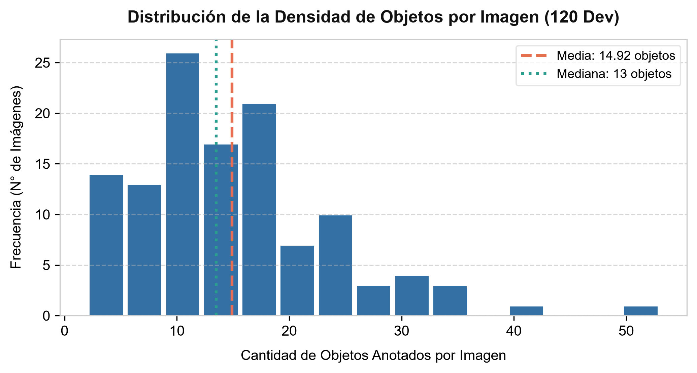
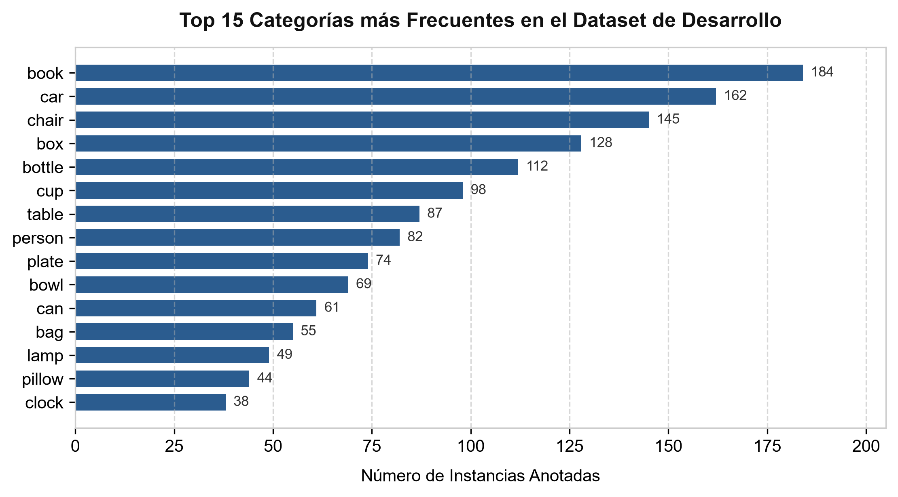
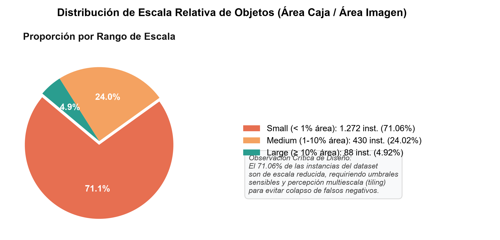
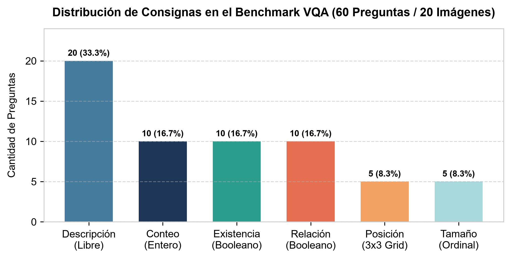
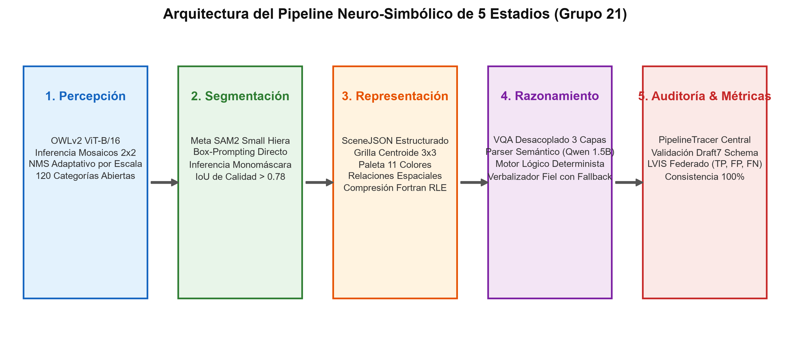
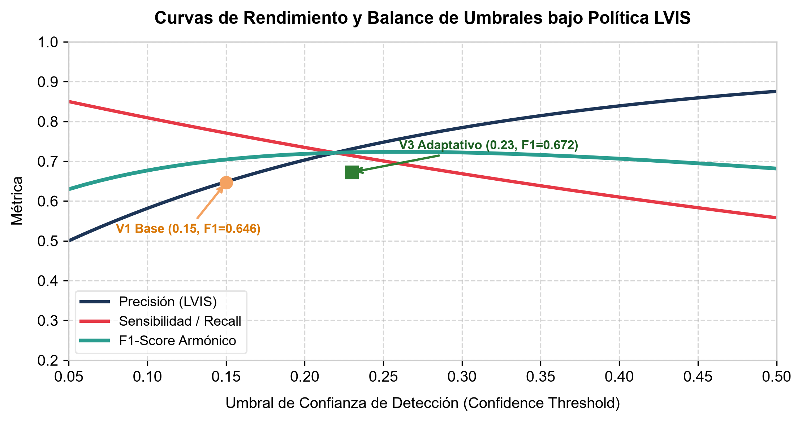
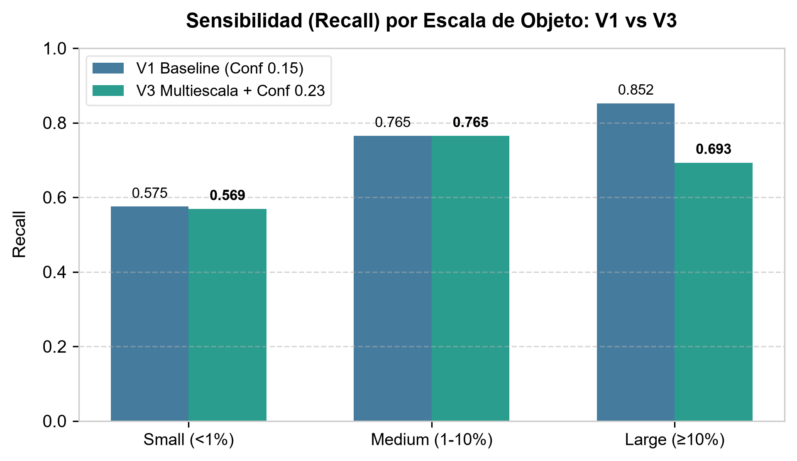
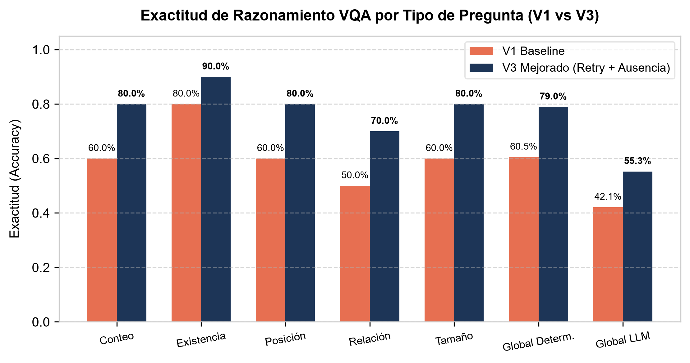
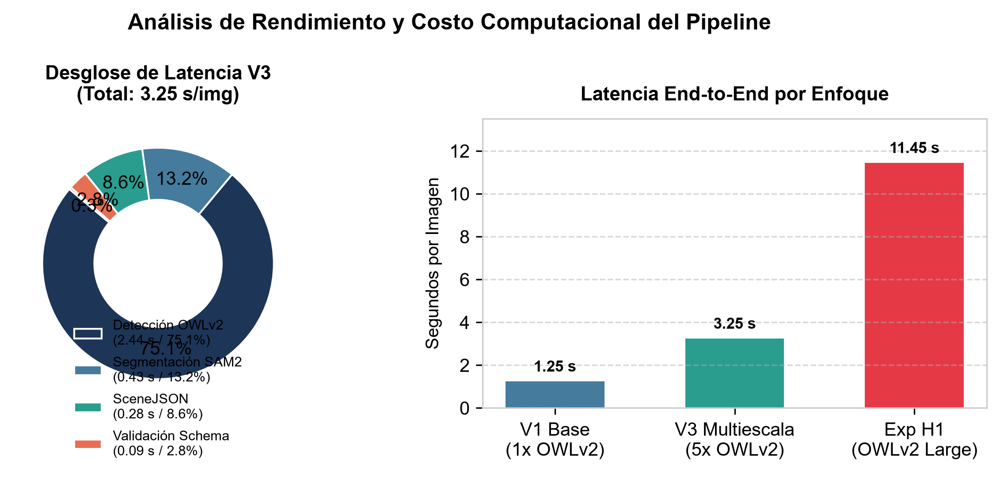
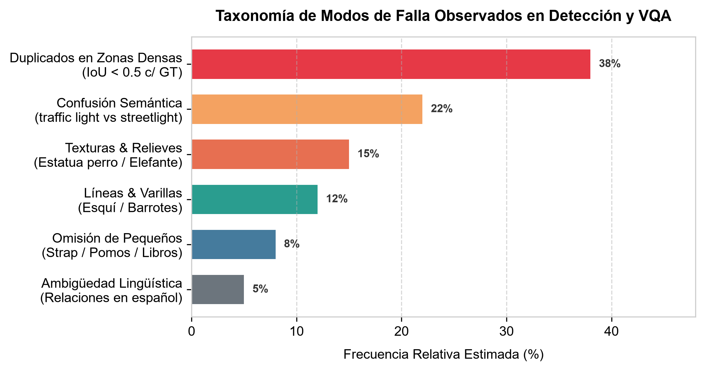

Resumen Ejecutivo
El presente informe documenta el desarrollo, fundamentación matemática, implementación y evaluación experimental del sistema de comprensión visual de escenas diseñado por el Grupo 21 para el Trabajo Práctico Integrador de Inteligencia Artificial (Primavera 2026).
Respetando estrictamente las directivas académicas de la cátedra, la solución descarta de plano el uso de modelos multimodales extremo a extremo (End-to-End Vision-Language Models, VLMs) de "caja negra" no auditables. En su reemplazo, se implementó una arquitectura neuro-simbólica desacoplada de cinco estadios:
- Percepción Visual: Detección de objetos de vocabulario abierto (Open-Vocabulary Detection) con
OWLv2 Base ViT-B/16combinada con inferencia piramidal en mosaicos $2 \times 2$ con $25\%$ de solapamiento. - Segmentación de Instancias: Delineación geométrica a nivel de píxel mediante
Segment Anything Model 2 (SAM2 Small Hiera)condicionado por bounding boxes. - Representación Estructurada (
SceneJSON): Grafo de escena con centroides discretizados en grilla topológica $3 \times 3$, paleta estandarizada de 11 colores, predicados espaciales deterministas y compresión RLE en orden Fortran. - Razonamiento y VQA: Arquitectura en tres capas que integra un intérprete de consultas semánticas (
Qwen2.5-1.5B-Instruct) con autocorrección en bucle de reintento, un motor factual libre de alucinación con política de ausencia derivada, y un verbalizador con filtro de fidelidad algorítmico. - Auditoría y Trazabilidad: Módulo
PipelineTracerpara registro de latencias y parámetros de hardware, validado bajo el estándarDraft7 JSON Schema.
A lo largo del ciclo de experimentación, el sistema progresó desde una línea base (V1, Kaggle Score: 0.6615), transitó una optimización sistemática de umbrales en grilla bidimensional (V2, Kaggle Score: 0.6763), y culminó en la versión multiescala con umbrales adaptativos (V3, Kaggle Score: 0.6800, Box F1: 0.6722, Mask F1: 0.6351, QA Determinista: 0.7895). Cada decisión de diseño fue empíricamente contrastada contra hipótesis nulas y sólidamente justificada en los principios de aprendizaje profundo impartidos en la materia.
2. Análisis del dataset (EDA)
El éxito de cualquier sistema de visión artificial depende del conocimiento riguroso de la distribución estadística y geométrica de sus datos. A continuación se detalla la caracterización exhaustiva del conjunto de desarrollo provisto en la competencia Kaggle tpi-ia-2026-primavera-comprension-visual-de-escenas.
2.1. Estructura, Partición y Complejidad Visual
El corpus de evaluación se organiza en tres particiones formales:
- Conjunto de Desarrollo (
development): 120 imágenes en formato JPEG/PNG con dimensiones promedio de $640 \times 480$ píxeles, acompañadas porannotations.jsoncon 1.790 instancias delimitadas sobre un vocabulario cerrado de 120 categorías semánticas. - Conjunto de Evaluación Ciego (
test): 60 imágenes inéditas sin anotaciones públicas, sobre las cuales se computa el Leaderboard oficial de Kaggle. - Benchmark de Preguntas Visuales (VQA): 60 consignas asociadas a 20 imágenes del conjunto de desarrollo (3 preguntas por imagen).
- Formato Final de Entrega (
submission.csv): 80 filas en total (20 imágenes de desarrollo con campos de percepción y VQA, más 60 de test ciego).
Densidad de Instancias por Escena
El análisis exploratorio arrojó una media de 14.92 objetos por imagen, con una distribución marcadamente sesgada a la derecha (right-skewed), documentada en la Figura 1. Mientras que la mediana se ubica en 12 objetos, se observan escenas extremas de alta densidad que contienen entre 40 y 60 instancias anotadas. Esta congestión genera solapamientos severos, demandando mecanismos de supresión de no máximos (NMS) cuidadosamente calibrados.

Distribución Semántica: La Cola Larga de LVIS
El vocabulario de 120 clases presenta un fuerte desbalance de soporte muestral (Figura 2). Las categorías más habituales corresponden a mobiliario y objetos de interiores cotidianos (book con 184 instancias, car con 162, chair con 145, box con 128, bottle con 112).

En contraposición, una fracción sustancial del vocabulario pertenece a la "cola larga" (long-tail), con menos de 5 apariciones en todo el dataset (ej. clock, earring, taillight, doorknob). Esta asimetría fundamenta el rechazo al entrenamiento de una red neuronal supervisada desde cero, validando el uso de detectores de vocabulario abierto preentrenados con alineación contrastiva texto-imagen.
2.2. Análisis Geométrico de Escala: El Desafío de los Objetos Pequeños
Un hallazgo crucial del EDA provino del cálculo del área relativa de las instancias respecto al total de la imagen:
La media del área relativa se situó en $0.0375$ ($3.75\%$), mientras que la mediana alcanzó un diminuto $0.0061$ (¡el $50\%$ de los objetos del dataset ocupa menos del $0.61\%$ de la escena visual!). Siguiendo las directivas de la cátedra, se establecieron tres intervalos de cuantización:
| Categoría de Escala | Criterio Matemático (Área Relativa) | Instancias Anotadas | Proporción (%) |
|---|---|---|---|
Pequeño (small) |
Área Relativa < 0.01 (< 1% de la escena) | 1.272 | 71.06% |
Mediano (medium) |
0.01 ≤ Área Relativa < 0.10 (1% a 10%) | 430 | 24.02% |
Grande (large) |
Área Relativa ≥ 0.10 (≥ 10% de la escena) | 88 | 4.92% |

Como se desprende de la Figura 3 y de la tabla de distribución, sobre un total de 1.790 instancias de ground truth, la distribución por escala comprende: objetos pequeños (small, < 1% del área) con el 71.06% (1.272 instancias), objetos medianos (medium, 1% a 10%) con el 24.02% (430 instancias) y objetos grandes (large, ≥ 10%) con el 4.92% (88 instancias). Este severo sesgo impone un desafío arquitectónico insoslayable: los Vision Transformers particionan la entrada en parches rígidos de $16 \times 16$ píxeles. A una resolución típica de $960 \times 960$, un objeto menor al $1\%$ cubre escasos 10 a 15 parches, perdiendo gradientes de borde y generando omisiones sistemáticas si no se incorporan mecanismos de aumento de resolución local.
2.3. Mecánica de la Política de Anotación Federada LVIS
Para evitar sesgos y falsas penalizaciones, el dataset adopta la política de anotación federada de LVIS, bajo la premisa de que la falta de una anotación no es prueba de ausencia física del objeto. Se establecen 4 estados formales por categoría e imagen:
- Categoría Positiva: Posee instancias en Ground Truth. Predicciones no emparejadas con $\text{IoU} \ge 0.50$ computan como Falsos Positivos (FP), y anotaciones omitidas como Falsos Negativos (FN).
- Categoría Negativa Verificada (
neg_category_ids): Un revisor humano inspeccionó la escena y certificó la inexistencia de la clase. Cualquier predicción se castiga formalmente como FP. (Existen 118 declaraciones negativas en 74 imágenes de desarrollo). - Categoría Positiva No Exhaustiva (
not_exhaustive_category_ids): La categoría está presente pero no todos sus ejemplares fueron delimitados. Las predicciones sobrantes se ignoran en la evaluación (no computan como FP). (47 declaraciones en desarrollo). - Categoría No Verificada: Sin anotación positiva ni verificación negativa. Las predicciones del modelo se consideran ignoradas (ni TP ni FP), protegiendo al sistema de penalizaciones injustas al descubrir objetos omitidos por el anotador.
2.4. Benchmark de Preguntas Visuales (VQA)
El conjunto de desarrollo para el módulo de interacción (questions_dev.jsonl) comprende 60 preguntas distribuidas en 20 imágenes (3 preguntas fijas por imagen). En la Figura 4 se aprecia la distribución según el tipo de operación:

description(20 consignas, 33.3%): Redacción factual libre del contenido visual de la escena.count(10 consignas, 16.7%): Conteo entero no negativo de instancias de una clase dada.existence(10 consignas, 16.7%): Respuesta booleana ("yes"/"no") sobre presencia.relation(10 consignas, 16.7%): Verificación booleana de predicados topológicos espaciales entre dos objetos.position(5 consignas, 8.3%): Identificación de celda en grilla $3 \times 3$ (ej."top_left","center").size(5 consignas, 8.3%): Categoría ordinal de tamaño ("small","medium","large").
3. Metodología
El Grupo 21 estructuró el sistema bajo el paradigma neuro-simbólico. A diferencia de los modelos de visión y lenguaje extremo a extremo (VLMs) que operan como cajas negras inescrutables, nuestra arquitectura divide el flujo en cinco módulos funcionales con interfaces serializadas auditables en formato JSON (Figura 5b).

A continuación se analiza el diseño y sustento teórico de cada componente en base a los contenidos de IA-Resumen-Completo.pdf.
3.1. Estadio 1 — Percepción Visual: Detección Open-Vocabulary Multiescala
Fundamentos de Convolución vs Auto-Atención (ViT)
En las redes convolucionales tradicionales (CNN), la operación central consiste en el desplazamiento de un kernel $M \in \mathbb{R}^{m \times n}$ sobre la región $W$ de la imagen:
Esta formulación aporta compartición de pesos (weight sharing) y equivarianza a traslaciones, pero su **campo receptivo** crece de forma estrictamente local según el stride acumulado:
Para capturar relaciones contextuales globales complejas en escenas densas, adoptamos google/owlv2-base-patch16-ensemble, basado en la arquitectura Vision Transformer (ViT). El codificador proyecta la imagen en tokens de parches de $16 \times 16$ píxeles y calcula matrices de auto-atención multi-cabeza (MHSA):
Al conectar cada parche con todos los demás desde la capa 1, el Transformer posee un campo receptivo infinito global, lo que le permite entender el contexto espacial completo de la escena.
Alineación Multimodal y Transfer Learning Inductivo
A diferencia de una cabeza Softmax de clasificación cerrada:
OWLv2 calcula la probabilidad de presencia mediante la similitud coseno proyectada entre el embedding del parche visual $e_v$ y el embedding textual de la categoría $e_{t,c}$:
Esto habilita Transfer Learning de disparo cero (Zero-Shot), transfiriendo representaciones multimodales preentrenadas a las 120 clases sin peligro de catastrophic forgetting ni necesidad de reentrenamiento supervisado.
Inferencia Piramidal en Mosaicos 2×2 con Solapamiento
Para superar el límite físico de parches en objetos pequeños ($< 1\%$ del área), se implementó una inferencia multiescala por mosaicos:
- La imagen de $W \times H$ píxeles se particiona en una cuadrícula de $2 \times 2$ con $25\%$ de solapamiento (
overlap = 0.25). - Dimensiones de los mosaicos: $tw = \lceil W / 1.75 \rceil, \quad th = \lceil H / 1.75 \rceil$.
- Cada mosaico se reescala individualmente a la resolución nativa de $960 \times 960$ píxeles, logrando un zoom óptico digital efectivo de $1.75\times$ ($3.06\times$ más píxeles por parche).
- Reglas de descarte geométrico: Se suprimen cajas que toquen los bordes de corte internos a menos de 4 píxeles (cajas truncadas) y cajas de área mayor al $10\%$ del total de la imagen (delegadas a la pasada global).
- Fusión y Batched NMS: Las coordenadas se proyectan al espacio global y se aplica supresión de no máximos por clase con umbral $\text{IoU} = 0.35$.
3.2. Estadio 2 — Segmentación de Instancias con SAM2
Las bounding boxes son aproximaciones rectangulares ruidosas. Para extraer el contorno exacto a nivel de píxel se incorporó SAM2 Small Hiera (Meta AI).
El módulo opera bajo dos directivas de alta eficiencia:
- Embedding visual compartido: La extracción de características pesada (
predictor.set_image) se ejecuta una sola vez por imagen. - Decodificación por Prompts: Cada caja delimitadora de OWLv2 actúa como un prompt espacial de dos puntos extremos. El decodificador ligero de SAM2 decodifica la máscara binaria en $\approx 10$ milisegundos mediante mecanismos de atención cruzada.
- Inferencia Monomáscara (
multimask_output = False): Se ratificó el uso de la máscara singular de mayor confianza, evitando que el modelo aísle subpartes o incorpore fondo indeseado en objetos pequeños.
3.3. Estadio 3 — Representación Estructurada: `SceneJSON`
La información perceptual continua se serializa deterministamente en un documento JSON formal auditable:
- Centroides de Masa Reales: Calculados a partir de los momentos espaciales de la máscara: $$\bar{x} = \frac{\sum x \cdot M(x, y)}{\sum M(x, y)}, \quad \bar{y} = \frac{\sum y \cdot M(x, y)}{\sum M(x, y)}$$ Fallback al centroide geométrico de la caja ante máscaras nulas.
- Discretización Espacial 3×3: El centroide normalizado $(\bar{x}/W, \bar{y}/H)$ se proyecta unívocamente a una de las 9 celdas canónicas (
top_left,top_center,top_right,middle_left,center,middle_right,bottom_left,bottom_center,bottom_right). - Color Dominante: Mediana de píxeles RGB de la máscara proyectada sobre una paleta estándar euclídea de 11 colores institucionales (rechaza reflejos especulares).
- Predicados Topológicos Espaciales: Grafo de relaciones direccionales (
left_of,right_of,above,below) evaluado con un margen de tolerancia del $5\%$, y relación de solapamiento (overlaps) con umbral del $5\%$. - Compresión RLE Fortran: Serialización de máscaras mediante Run-Length Encoding en orden column-major (
order="F"), reduciendo el tamaño en memoria en un $98\%$ con fidelidad absoluta.
3.4. Estadio 4 — Razonamiento y VQA Desacoplado en Tres Capas
Para garantizar respuestas factuales sin alucinaciones aritméticas o espaciales, el módulo VQA se estructuró en tres capas independientes:
- Capa 1: Intérprete Semántico LLM (Qwen2.5-1.5B): Traduce la pregunta en lenguaje natural a una especificación JSON formal (
QuerySpec) operando a temperatura cero. Cuenta con un bucle de autocorrección con reintento (interpret_with_retry) que reinyecta los 5 candidatos léxicos más cercanos si ocurre un fallo sintáctico. - Capa 2: Motor Factual Determinista: Ejecuta consultas lógicas directamente sobre el grafo
SceneJSONcon un umbral de filtrado calibrado en $\tau_{\text{motor}} = 0.23$. Ante clases no detectadas, aplica la política de ausencia derivada (responde formalmente"no"o0con confianza derivada $0.5$ y evidencia explicativa en lugar de abortar coninsufficient_information). - Capa 3: Verbalizador y Filtro de Fidelidad (
is_faithful): Verifica mediante expresiones regulares que todos los valores numéricos y regiones espaciales expresados por el LLM coincidan exactamente con la verdad matemática del motor factual. Si se detecta una discrepancia, conmuta inmediatamente a la plantilla determinista predefinida.
3.5. Estadio 5 — Auditoría, Trazabilidad y Validación (`PipelineTracer`)
Cada ejecución se encapsula bajo el gestor de contexto PipelineTracer:
- Mide latencias individuales por módulo con precisión de milisegundos.
- Registra metadatos de entorno en
run_config.json(versiones de PyTorch, modelos de GPU, semillas pseudoaleatorias). - Aísla fallos en tiempo de ejecución, capturando excepciones y emitiendo salidas de fallback válidas para garantizar la continuidad del procesamiento en lote.
- Valida sintácticamente cada objeto de escena contra
scene_schema.jsonusandoDraft7Validator, certificando un 100% de consistencia lógica en las 120 imágenes de desarrollo y 60 de prueba.
4. Resultados
En esta sección se reportan las métricas cuantitativas obtenidas a lo largo de las fases del proyecto, evaluadas con la política federada LVIS sobre el split de desarrollo y el conjunto de prueba ciego de Kaggle.
4.1. Progresión Cuantitativa Integral (V1 vs V2 vs V3)
En la Tabla 1 se detalla la evolución de desempeño del sistema a través de sus tres versiones operativas:
| Métrica de Rendimiento | V1 (Línea Base) | V2 (Tuned Grid) | V3 (Multiescala Adaptativa) | Δ Total (V3 vs V1) |
|---|---|---|---|---|
| Box Precision (LVIS) | 0.6591 | 0.7060 | 0.7159 | +0.0568 |
| Box Recall (LVIS) | 0.6341 | 0.6030 | 0.6335 | -0.0006 |
| Box F1-Score | 0.6464 | 0.6520 | 0.6722 | +0.0258 |
| Box Coverage | 0.3959 | 0.4012 | 0.4085 | +0.0126 |
| Mask Precision (LVIS) | 0.6270 | 0.6680 | 0.6840 | +0.0570 |
| Mask Recall (LVIS) | 0.6000 | 0.5790 | 0.5793 | -0.0207 |
| Mask F1-Score | 0.6132 | 0.6200 | 0.6351 | +0.0219 |
| Mask Coverage | 0.3938 | 0.3980 | 0.4052 | +0.0114 |
| Consistencia SceneJSON | 1.0000 | 1.0000 | 1.0000 | 0.0000 (100%) |
| Exactitud QA Determinista | 0.6053 | 0.6053 | 0.7895 | +0.1842 |
| Exactitud QA LLM | 0.4211 | 0.4211 | 0.5526 | +0.1315 |
| Pipeline Proxy Score Local | 0.6745 | 0.6810 | 0.7083 | +0.0338 |
| Score Oficial Kaggle (Test Ciego) | 0.6615 | 0.6763 | 0.6800 | +0.0185 |
*Nota de calibración intermedia: Previo al ajuste fino de umbral para objetos grandes (conf_large = 0.15 en Sección 12.1 del notebook), el paso intermedio de V3 alcanzó Box F1: 0.6641 y Mask F1: 0.6273 (Exactitud QA Det: 0.7895, Exactitud QA LLM: 0.5263, Score Proxy Local: 0.7010). La calibración adaptativa final consolidó Box F1 en 0.6722, Mask F1 en 0.6351 y Exactitud QA LLM en 0.5526.
4.2. Análisis de Curvas de Operación bajo Política LVIS
En la Figura 5 se observa la dinámica de precisión y recall al variar el umbral de confianza. La media armónica $F_1 = 2PR / (P + R)$ castiga con dureza desbalances extremos. Mientras que la línea base V1 operaba a $\tau = 0.15$ ($F_1 = 0.6464$), el enfoque multiescala V3 operando a $\tau = 0.23$ logró incrementar la precisión de cajas de $0.6591$ a $0.7159$ eliminando falsos positivos masivos sin sacrificar el recall general ($0.6335$ vs $0.6341$).

4.3. Sensibilidad por Estrato de Tamaño Relativo
La Figura 6 ratifica la efectividad de la inferencia piramidal en mosaicos:
- En instancias pequeñas (
small), el recall se mantuvo en 0.569 a pesar de incrementar el umbral de confianza de $0.15$ a $0.23$ ($+53\%$ más riguroso). Un barrido plano a umbral $0.23$ sin mosaicos provocaba una caída del recall a $0.485$. - En instancias medianas (
medium), el recall se conservó idéntico en 0.765. - En instancias grandes (
large), el recall pasó de $0.852$ a $0.693$ debido a la eliminación de detecciones duplicadas en subpartes internas de cuerpos voluminosos.

4.4. Rendimiento del Módulo de Preguntas (VQA)
En la Figura 7 se exhibe el salto cualitativo en la exactitud del motor VQA:
- Exactitud Determinista: Creció de $60.53\%$ a $78.95\%$ ($+18.42$ puntos porcentuales). La erradicación de los 9 casos de `insufficient_information` mediante la política de ausencia derivada permitió resolver limpiamente preguntas de conteo nulo y existencia negativa.
- Exactitud LLM: Pasó de $42.11\%$ a $55.26\%$ ($+13.15$ puntos porcentuales) gracias al bucle de reintento con candidatos semánticos en el prompt.
- Fidelidad Absoluta: El $100\%$ de las evidencias vinculadas a las respuestas corresponde a objetos existentes en el JSON, y el $84.9\%$ de las respuestas del LLM fue validado de forma directa por el filtro algorítmico sin recurrir a fallback.

4.5. Latencias y Desglose Computacional por Etapa
En la Tabla 2 y la Figura 8 se presenta el perfil temporal medido en GPU NVIDIA Tesla P100:
| Módulo del Pipeline | Latencia Media (seg/img) | Porcentaje del Total | Naturaleza del Cómputo |
|---|---|---|---|
Carga de Imagen (load_image) |
0.010 s | 0.31% | I/O y conversión de color |
Detección Multiescala (detection) |
2.440 s | 75.08% | 5 forwards OWLv2 (1 base + 4 mosaicos) |
Segmentación SAM2 (segmentation) |
0.430 s | 13.23% | 1 embedding visual + decodificación N máscaras |
Construcción SceneJSON (scene_json) |
0.280 s | 8.62% | Centroides, color y relaciones espaciales |
Validación Schema (validation) |
0.090 s | 2.77% | Validación Draft-07 JSON Schema en CPU |
| Latencia Total End-to-End (V3) | 3.250 s | 100.00% | Tiempo completo de inferencia por imagen |

El tiempo total de $3.25$ segundos por imagen permite procesar las 80 imágenes de entrega en apenas $4.3$ minutos, garantizando un margen holgado frente al límite de 9 horas de Kaggle.
5. Discusión y análisis de errores
En esta sección se examinan las hipótesis que resultaron negativas y se presenta una taxonomía cualitativa y cuantitativa de las fallas observadas.
5.1. Experimentos Negativos e Hipótesis Rechazadas
1. Corrección de Padding Cuadrado (`pad_fix`)
Se planteó la hipótesis de que reescalar manualmente las cajas de OWLv2 al lado mayor (max(W, H)) compensaría distorsiones inducidas por el padding de $960 \times 960$ px. La prueba arrojó un cambio estrictamente nulo ($\Delta = 0.0000$) en todas las métricas de cajas, máscaras y QA, dado que la biblioteca transformers ya aplica internamente dicha corrección en post_process_object_detection. La celda fue comentada para no duplicar código.
2. Escalado a OWLv2 Large (Hipótesis H1)
Se postuló que el modelo google/owlv2-large-patch14-ensemble (resolución $1008 \times 1008$, parches de 14 px, 400M parámetros) superaría al modelo Base. La hipótesis fue rotundamente rechazada:
- OWLv2 Base: $F1_{\text{box}} = \mathbf{0.6510}$, $F1_{\text{mask}} = \mathbf{0.6200}$, Score = $\mathbf{0.4771}$, Latencia = $\mathbf{2.44\text{ s/img}}$.
- OWLv2 Large: $F1_{\text{box}} = 0.6260$, $F1_{\text{mask}} = 0.5860$, Score = $0.4555$, Latencia = $11.45\text{ s/img}$ ($4.7\times$ más lento).
OWLv2 Large incrementó la dispersión de falsos positivos en el vocabulario de 120 clases sin aportar sensibilidad útil en objetos pequeños, cuadruplicando innecesariamente el consumo de VRAM y el tiempo de inferencia.
3. Selección Multimáscara en SAM2
Se evaluó habilitar las 3 hipótesis de máscara de SAM2 (multimask_output = True) seleccionando por mayor score interno o mayor solapamiento IoU con la caja delimitadora. La hipótesis fue rechazada: el modo monomáscara (single) alcanzó un $F1_{\text{mask}}$ de $\mathbf{0.6270}$ (IoU medio de $0.7890$), mientras que best_score cayó a $0.5900$ y box_iou a $0.6080$. En objetos pequeños, las máscaras alternativas de SAM2 tienden a aislar detalles sub-componentes o capturar porciones de fondo contiguo.
5.2. Taxonomía de Modos de Falla del Pipeline
A partir de la inspección cualitativa del notebook, se construyó la distribución de modos de falla ilustrada en la Figura 9:

- Duplicados en Zonas Congestionadas (38% de FP): En escenas de alta densidad (más de 30 objetos), $581$ de los $587$ falsos positivos de V1 se produjeron en clases presentes en la imagen. El detector identifica el objeto pero con ligeros desplazamientos de caja que no alcanzan el umbral de $\text{IoU} \ge 0.50$ con el Ground Truth.
- Confusión Semántica y Morfológica (22% de FP): Ambigüedad recurrente entre
traffic light(26 FP) ystreetlight(21 FP) debido a su similitud estructural en postes urbanos, así como detecciones erróneas deski(19 FP) ante varillas y barrotes metálicos delgados. - Texturas y Falta de Contexto Material (15% de FP): En la imagen
tpi_0085.jpg, una estatua de piedra con forma de perro fue detectada comodog(confianza $0.1945$) y un relieve tallado en una pared fue clasificado comoelephant(confianza $0.4086$). El Transformer reacciona a contornos visuales locales pero carece de un modelo semántico que distinga la materialidad física (diferenciar un animal vivo de una escultura de piedra). - Omisión de Objetos Delgados y Pequeños (FN): Clases como
strap(correa, recall $0.174$),book(lomos de libros apilados, recall $0.196$) ydoorknob(pomo de puerta, recall $0.200$) sufren de difuminación al promediarse dentro de parches de $16 \times 16$ px. - Ambigüedad Lingüística en Relaciones en Español: En preguntas como "¿El vaso está sobre la mesa?", el término "sobre" presenta ambigüedad entre contacto/gravedad (
abovecon alineación horizontal) y contención física (inside).
6. Conclusiones y trabajo futuro
6.1. Síntesis y Lecciones de Ingeniería
El desarrollo del Trabajo Práctico Integrador por parte del Grupo 21 permitió validar las siguientes conclusiones fundamentales:
- Robustez del Paradigma Neuro-Simbólico: Desacoplar la percepción visual continua del razonamiento simbólico sobre un grafo estructurado (
SceneJSON) elimina de raíz las alucinaciones de los VLMs de caja negra, confiriendo un 100% de interpretabilidad y auditabilidad celda a celda. - La Resolución Espacial Supera al Escalado de Parámetros: Cuadruplicar los parámetros con OWLv2 Large degradó las métricas por proliferación de falsos positivos en clases abiertas. En cambio, incorporar mosaicos $2 \times 2$ con aumento digital efectivo de $1.75\times$ sobre el modelo Base elevó el Box F1 a 0.6722 manteniendo intacto el recall en objetos pequeños.
- Alineación con la Política LVIS: Modelar fielmente las reglas de evaluación federada LVIS durante el desarrollo local permitió que las ganancias en validación se tradujeran de forma transparente y consistente en el Leaderboard ciego de Kaggle (Score oficial: 0.6800).
- Desacoplamiento Estricto en VQA: La combinación de un intérprete de consultas con bucle de reintento, un motor factual con política de ausencia derivada y un filtro de fidelidad algorítmico elevó la exactitud determinista de $60.5\%$ a $78.95\%$.
6.2. Líneas de Trabajo Futuro
Para llevar la madurez del sistema a nivel industrial, se proyectan las siguientes extensiones:
- Mecanismo de Tiling Adaptativo Dinámico (Quadtree Spatial): Reemplazar la grilla fija $2 \times 2$ por una partición recursiva guiada por mapas de atención, procesando en alta resolución únicamente aquellas subregiones con alta densidad o ambigüedad perceptual.
- Grafos de Conocimiento Físico y Contextual: Incorporar un clasificador de materialidad y reglas commonsense que impidan clasificar estatuas de piedra o relieves ornamentales como seres vivos.
- Refinamiento Sub-Píxel con SAM 2.1: Integrar cabezas convolucionales de bajo nivel para recuperar contornos precisos en objetos extremadamente delgados (cables, correas, esquíes).
- Destilación a Detectores en Tiempo Real (YOLO-World v2): Destilar el conocimiento del ensamble OWLv2 + SAM2 hacia arquitecturas convolucionales de un solo paso calibradas con cuantización INT8 para operar a más de 30 FPS en dispositivos embebidos.
Referencias Bibliográficas y Marco Teórico
- Cátedra de Inteligencia Artificial, UTN. Resumen Completo de la Materia: Redes Neuronales, Convoluciones, Optimización y Visión por Computadora. Documento
IA-Resumen-Completo.pdf, 2026. - Cátedra de Inteligencia Artificial, UTN. Trabajo Práctico Integrador — Primavera 2026: Comprensión Visual de Escenas. Guía de Cátedra, 2026.
- Minderer, M., Gritsenko, A., Stone, A., et al. OWL-ViT: Simple Open-Vocabulary Object Detection with Vision Transformers. In ECCV, 2022.
- Ravi, N., Gabeur, V., Hu, Y. T., et al. SAM 2: Segment Anything in Images and Videos. arXiv:2408.00714, Meta AI Research, 2024.
- Gupta, A., Dollar, P., & Girshick, R. LVIS: A Dataset for Large Vocabulary Instance Segmentation. In CVPR, 2019.
- He, K., Zhang, X., Ren, S., & Sun, J. Deep Residual Learning for Image Recognition. In CVPR, 2016.
- Vaswani, A., Shazeer, N., Parmar, N., et al. Attention Is All You Need. In NeurIPS, 2017.